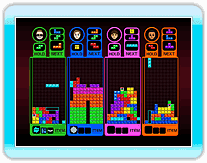

Wordt gespeeld met standaard Tetris wedstrijdregels. Neem het op tegen een rivaal en/of een computergestuurde tegenstander door lijnen te klaren en je tegenstander(s) forceren te verliezen. De eerste die dit doet is de winnaar. Het aantal lijnen dat je klaart, bepaalt hoeveel strafblokken je stuurt naar je tegenstander's velden.

De standaardregels zijn hetzelfde als die voor "Veldklimmer". Je wint door of het doel als eerst te bereiken of wanneer je tegenstander niet langer door kan racen. Elke keer dat een speler door een checkpoint gaat, krijg die speler een "Lijntrap".

Klaar de lijnen aangeduid in het groen. Als je een Tetrimino klaart op de lijn, zullen de groene lijnen erachter ook verdwijnen. Je wint door of als eerste alle lijnen te klaren, of wanneer je tegenstanders niet langer door kunnen spelen. Als je als team speelt en je teamgenoot een lijn klaart, zal de lijn op dezelfde locatie in jouw veld ook verdwijnen.

De standaardregels zijn hetzelfde als die voor "Schaduw". De winnaar is de speler met het hoogste compleet-percentage aan het eind van het spel; maar wanneer een speler een 100% compleet-percentage behaald tijdens het spel, zal die speler gelijk tot winnaar worden verklaard.

De standaardregels zijn hetzelfde als die voor "Levelracer". Je wint door of als eerst het doel te bereiken, of wanneer je tegenstanders niet langer door kunnen spelen.

Een spel met 2 spelers waarin de deelnemers samenwerken om lijnen te klaren in een veld dat twee keer zo wijd is als normaal (20 blokken wijd).
De Tetriminos die het veld binnenkomen verschillen voor P1 en P2. Echter, de standaardregels van Tetris zijn van toepassing. "Vasthouden" wordt gedeeld door P1 en P2.

Een spel met 2 spelers dat gespeeld wordt op een veld dat twee keer zo wijd is als normaal (20 blokken wijd). De regels verschillen enorm van de standaardregels in dat spelers met elkaar de strijd aangaan om te zien wie het grootste gebied kan omsluiten met
zijn Tetriminos (de Tetriminos zelf tellen als gebied).
De spelers besturen beurtelings een Tetrimino.
De speler wiens Tetriminos een gebied omsluiten heeft dat gebied gewonnen. Aan het eind van het
spel wordt de speler met het grootste totale gebied tot winnaar verklaard.